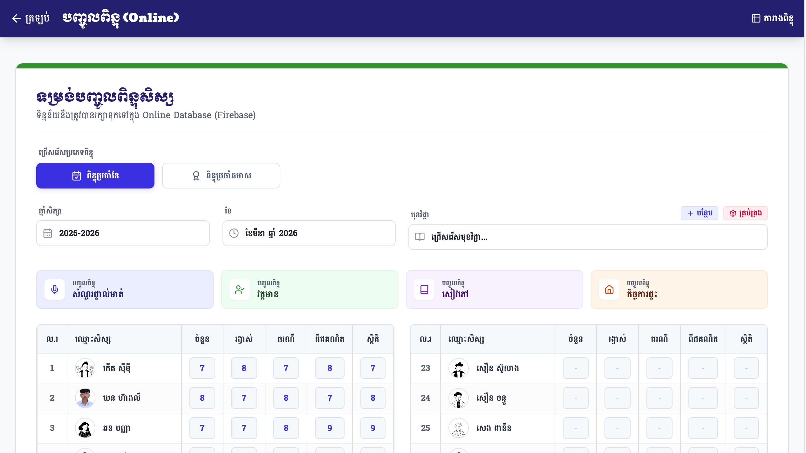
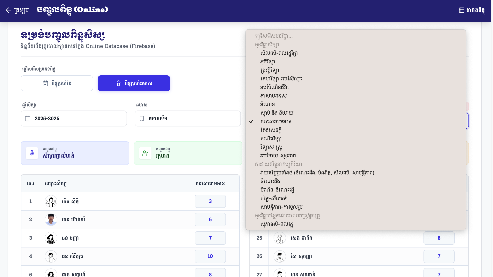
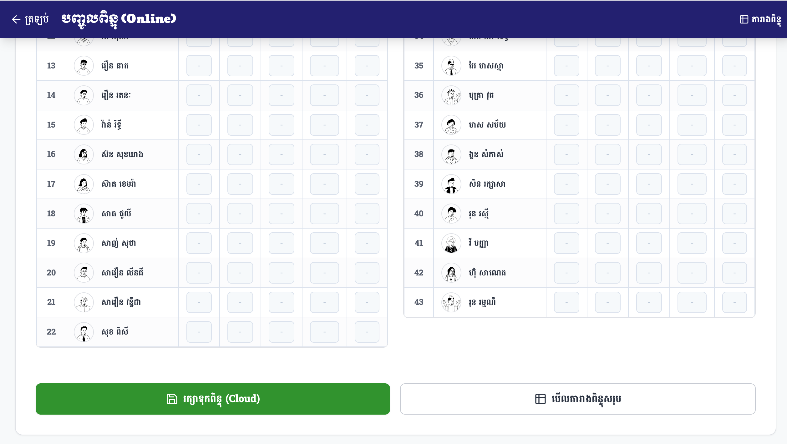

សៀវភៅណែនាំពីរបៀបបញ្ចូលពិន្ទុប្រចាំខែ និងប្រចាំឆមាស ការកំណត់មុខវិជ្ជា និងការរក្សាទុកទិន្នន័យ។
រូបភាពខាងក្រោមនេះបង្ហាញពីការកំណត់មុខងារសំខាន់ៗទាំង ៦ នៅលើទម្រង់បញ្ចូលពិន្ទុ ដែលលោកគ្រូអ្នកគ្រូត្រូវស្វែងយល់៖

អនុញ្ញាតឱ្យលោកអ្នកប្តូររវាងការបញ្ចូល ពិន្ទុប្រចាំខែ ឬ ពិន្ទុប្រចាំឆមាស។ ទម្រង់ទិន្នន័យនឹងផ្លាស់ប្តូរដោយស្វ័យប្រវត្តិទៅតាមជម្រើសរបស់អ្នក។
ជ្រើសរើសឆ្នាំសិក្សាដែលត្រូវបញ្ចូលទិន្នន័យ ដើម្បីធានាថាពិន្ទុត្រូវបានរក្សាទុកក្នុងកាលបរិច្ឆេទត្រឹមត្រូវ (ឧ. ២០២៥-២០២៦)។
កំណត់ខែជាក់លាក់ (ឬឆមាស) ដែលអ្នកចង់វាយបញ្ចូលពិន្ទុ។ រាល់ការប្តូរខែ ប្រព័ន្ធនឹងទាញយកទិន្នន័យថ្មីមកបង្ហាញភ្លាមៗ។
ប្រអប់បញ្ជីមុខវិជ្ជាស្តង់ដារដែលមានស្រាប់ក្នុងកម្មវិធីសិក្សា ព្រមទាំងមានបែងចែកជាប្រភេទដូចជា ភាសាខ្មែរ គណិតវិទ្យា វិទ្យាសាស្ត្រ និងការវាយតម្លៃអាកប្បកិរិយា។
ប៊ូតុងពិសេសសម្រាប់ឱ្យលោកគ្រូអ្នកគ្រូបន្ថែមមុខវិជ្ជាដោយខ្លួនឯង ករណីមុខវិជ្ជានោះមិនមាននៅក្នុងបញ្ជីស្តង់ដារ (ឧ. កុំព្យូទ័រ, ភាសាចិន)។
កន្លែងវាយបញ្ចូលពិន្ទុផ្ទាល់សម្រាប់សិស្សម្នាក់ៗ។ អ្នកអាចវាយលេខ ឬរើសនិទ្ទេសសម្រាប់មុខវិជ្ជាអាកប្បកិរិយា ហើយទិន្នន័យនឹងត្រូវរក្សាទុកបណ្តោះអាសន្ន។
នៅពេលលោកអ្នកចុចលើប្រអប់ មុខវិជ្ជា បញ្ជីមុខវិជ្ជាយ៉ាងច្រើននឹងលោតទម្លាក់ចុះមក ដែលបែងចែកជាក្រុមច្បាស់លាស់ងាយស្រួលស្វែងរក៖

បន្ទាប់ពីបញ្ចូលពិន្ទុរួចរាល់ សូមរំកិលអេក្រង់មកផ្នែកខាងក្រោមបំផុត អ្នកនឹងឃើញប៊ូតុងសំខាន់ៗចំនួន២៖

ប៊ូតុងពណ៌បៃតងនេះមានតួនាទីបញ្ជូនទិន្នន័យពិន្ទុដែលអ្នកបានវាយបញ្ចូល ទៅរក្សាទុកយ៉ាងសុវត្ថិភាពក្នុង Firebase Cloud ទោះបិទកុំព្យូទ័រក៏មិនបាត់បង់ដែរ។
ចុចប៊ូតុងនេះដើម្បីប្តូរទៅកាន់ទំព័រ "តារាងពិន្ទុសរុប (Master Sheet)" ដែលនឹងបង្ហាញពិន្ទុគ្រប់មុខវិជ្ជា និងចំណាត់ថ្នាក់សិស្សរួចជាស្រេចដើម្បីបោះពុម្ព។
ដើម្បីស្វែងយល់កាន់តែច្បាស់ពីដំណើរការបញ្ចូលពិន្ទុប្រចាំខែ និងការប្តូរទៅពិន្ទុឆមាស សូមទស្សនាវីដេអូណែនាំខាងក្រោម៖